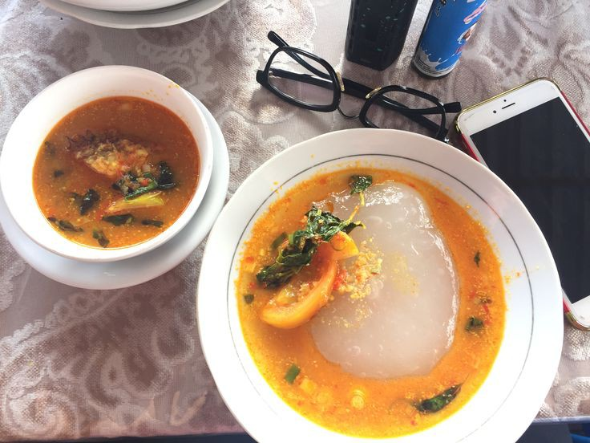

Papeda adalah makanan berupa bubur sagu khas Maluku dan Papua yang biasanya disajikan dengan ikan tongkol atau bubara yang dibumbui dengan kunyit. Papeda berwarna putih dan bertekstur lengket menyerupai lem dengan rasa yang tawar. Papeda merupakan makanan yang kaya serat, rendah kolesterol, dan cukup bernutrisi, papeda merupakan salah satu sajian khas sagu yang jarang ditemukan. Antropolog sekaligus Ketua Lembaga Riset Papua, Johszua Robert Mansoben, menyatakan bahwa papeda dikenal lebih luas dalam tradisi masyarakat adat Sentani dan Abrab di Danau Sentani dan Arso, serta Manokwari.
Resep Papeda
1/4 Kg tepung tapioka
15 Sendok makan tepung terigu
3 Batang bawang godong (iris cincang)
1 Penyedap rasa
Garam secukupnya
Secukupnya air
1 Telor